Cedar, vinyl, ornamental steel, chain link, and ranch systems — every line designed for your property and installed by our own crews to stand up to Oklahoma wind, sun, and clay soil.
Nothing matches the character of real wood. We build in premium cedar — with southern yellow pine available as a budget-friendly alternative — always on galvanized steel posts set in concrete, with cedar kickboards to keep pickets off the soil.
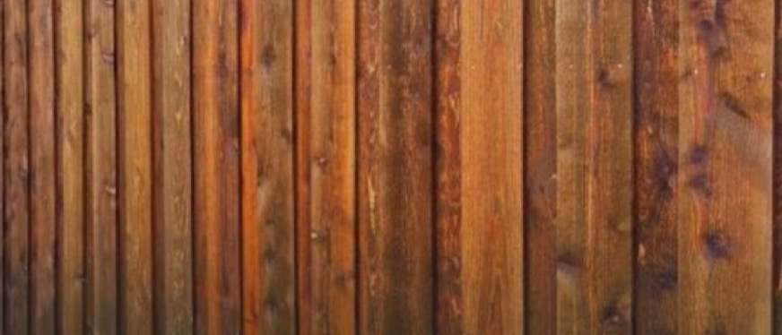
A wood fence is only as good as what holds it up. Every Prestige wood fence starts with steel in concrete — not wood in dirt — so the line stays straight and plumb long after lesser fences lean.
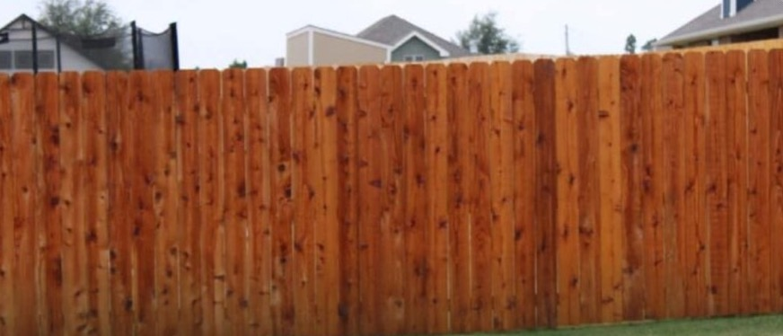
Our signature fence — solid-screen cedar pickets and rails for a warm, private backyard line that takes stain beautifully and anchors any landscape.
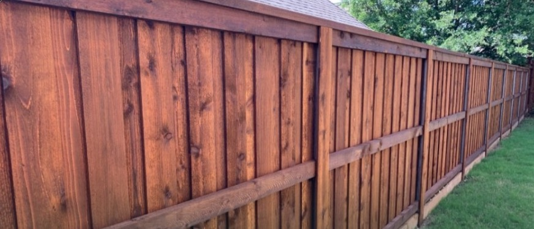
Overlapping pickets on alternating sides mean no gaps appear as the wood dries — total privacy with a finished look from both sides of the fence.
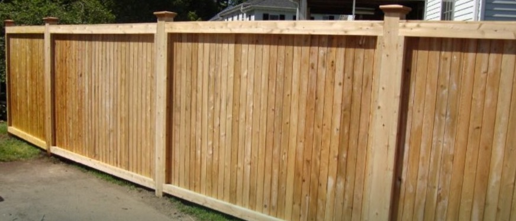
Square posts, cap board, trim, and kickboard — our most refined wood fence, built for standout curb appeal on premium properties.
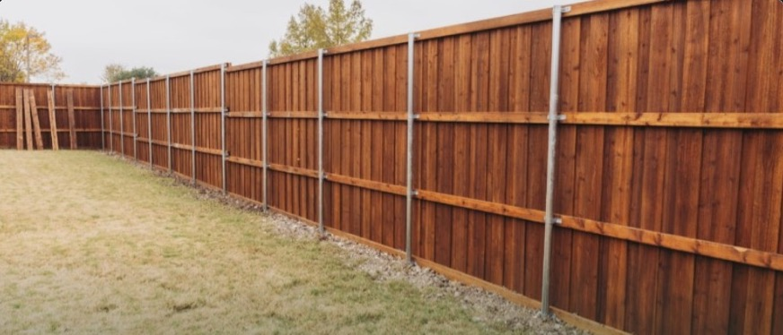
Two extra feet of screening for corner lots, two-story neighbors, and busy roads — engineered with heavier framing to handle Oklahoma wind.
UV- and weather-resistant vinyl never needs staining, painting, or sealing — it keeps its clean, bright look season after season. Materials are backed by manufacturer warranty, and our installation carries the Prestige workmanship warranty on top.
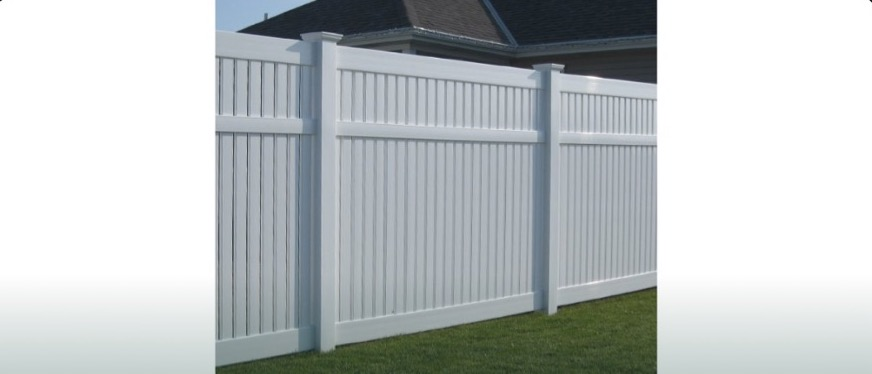
Solid interlocking panels for full backyard privacy with zero upkeep — no fading, no rot, no staining, ever. Rinse it off and it looks new again.
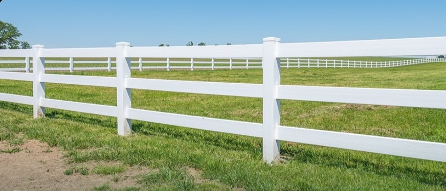
The classic white ranch rail look without the repainting — an open, elegant boundary for acreage, horse properties, and front pastures.
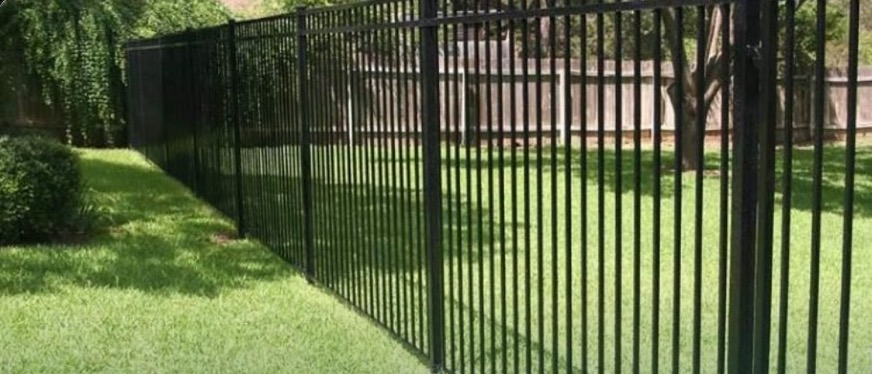
Powder-coated steel panels deliver the elegance of wrought iron with modern durability — a secure boundary that showcases your landscape instead of hiding it.
The workhorse of fencing — decades of dependable security for backyards, kennels, and commercial yards, installed with the same set-in-concrete standards as every Prestige fence.
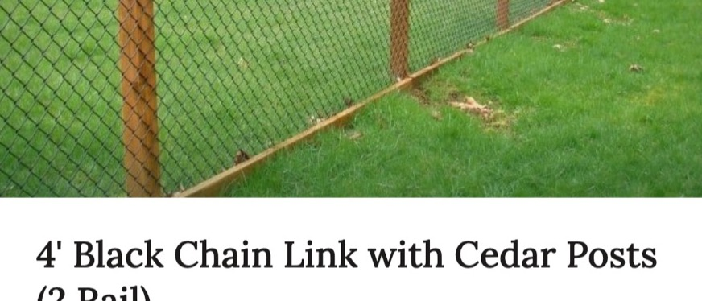
Classic galvanized chain link keeps things simple and durable. Black-coated fabric nearly disappears against the landscape — and pairing it with cedar posts, as pictured, adds warmth that elevates chain link well beyond the ordinary.
Acreage and livestock lines built the right way — H-braces and corner braces set the tension, so wire stays stretched tight and rail lines stay straight across every rise and draw.
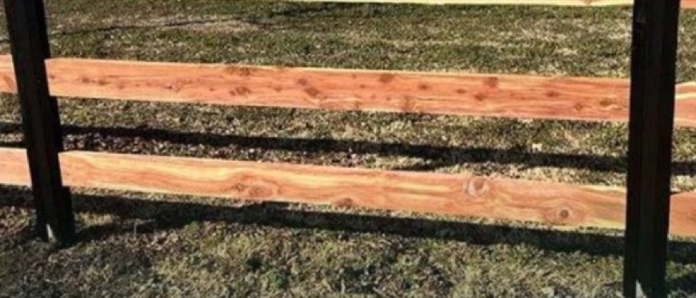
Cedar rails on metal posts — the timeless ranch rail look with steel-backed strength that won't rot, lean, or need replacing post by post.
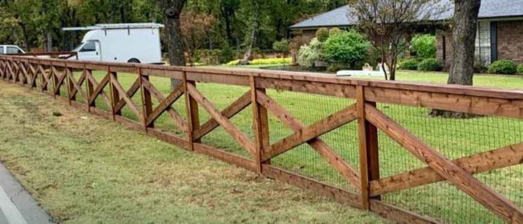
Traditional wood ranch fencing for pastures, front acreage, and property lines — handsome from the road and sturdy where it counts.
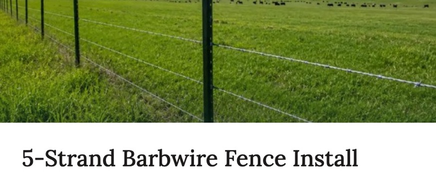
5, 6, and 7-strand barbwire and woven wire for secure livestock containment — stretched, stapled, and braced to stay tight for the long haul.
We'll measure your line, talk through options, and deliver a clear quote — free, with no pressure and no obligation.